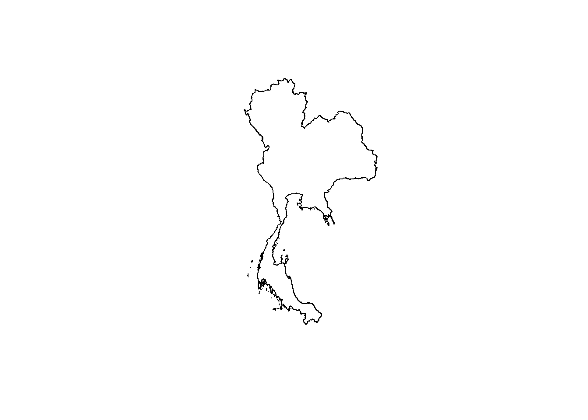
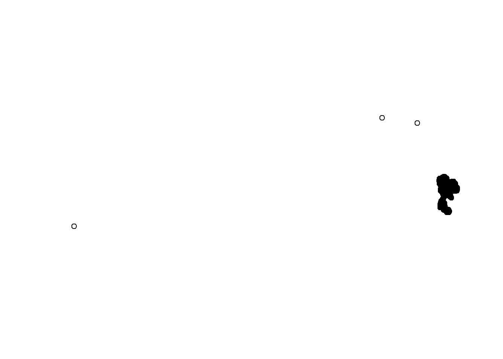
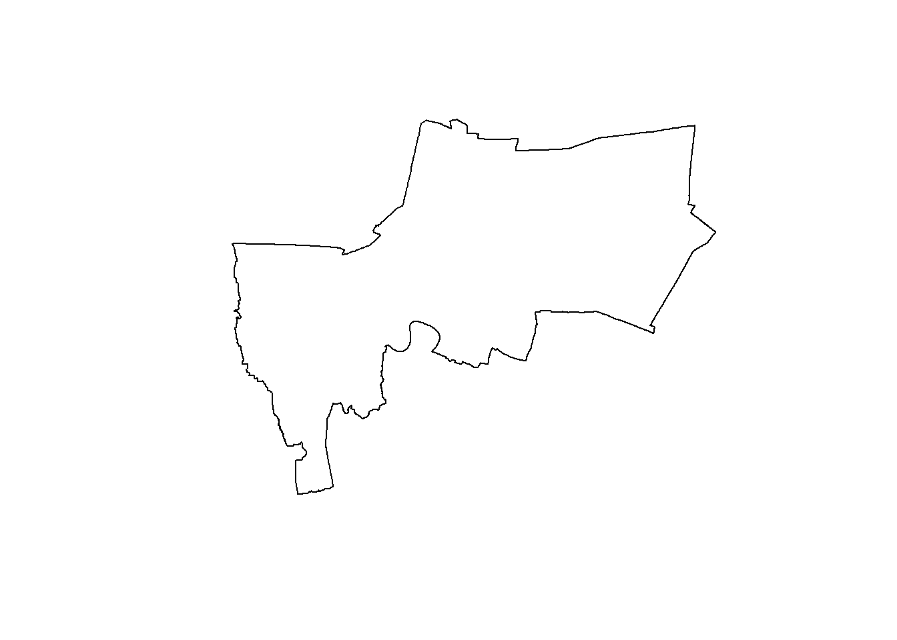
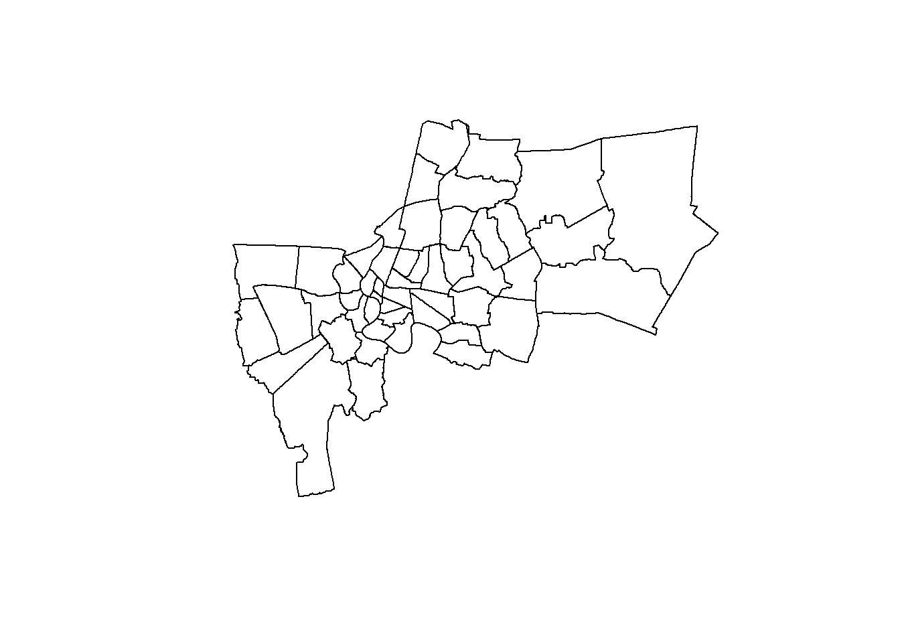
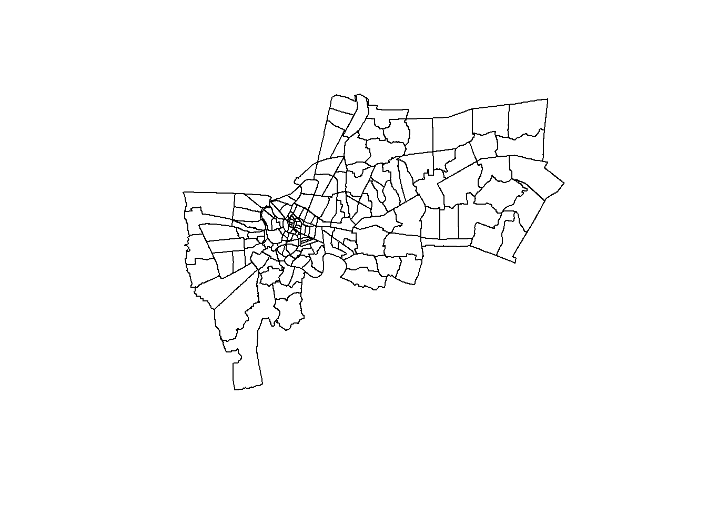

pacman::p_load(sf, sp, raster, spatstat, tmap, tidyverse)
set.seed(1234) #set seed to ensure the result is consistentTake Home Exercise 01
Data preparation
rdacc_sf <-read_csv("data/thai_road_accident_2019_2022.csv") %>%
filter(!is.na(longitude) & longitude != "",
!is.na(latitude)& latitude != "") %>%
st_as_sf(coords= c("longitude", "latitude"),crs =4326) %>%
st_transform(crs=32647) %>%
mutate(month_num = month(incident_datetime)) %>%
mutate(month_fac = month(incident_datetime,label = TRUE,
abbr= TRUE )) %>%
mutate(dateofweek = day(incident_datetime))
#transforming to geographic data.#|eval: False
acc <-read_csv("data/thai_road_accident_2019_2022.csv") %>%
mutate(month_num = month(incident_datetime)) %>%
mutate(month_fac = month(incident_datetime,label = TRUE,
abbr= TRUE )) %>%
mutate(dateofweek = day(incident_datetime))write_rds(acc,"data/rds/acc.rds")#to save the file to rdsacc<-read_rds("data/rds/acc.rds") #re-reading the acc file to the environmentsPreparing the data for Bangkok Metropolitan Region
#|eval: False
SAB = st_read(dsn = "data", layer = "tha_admbnda_adm0_rtsd_20220121") %>%
st_transform(crs = 32647)Reading layer `tha_admbnda_adm0_rtsd_20220121' from data source
`C:\dewschan\ISSS622-GAA\Take_home_Ex\Take_home_01\data' using driver `ESRI Shapefile'
Simple feature collection with 1 feature and 13 fields
Geometry type: MULTIPOLYGON
Dimension: XY
Bounding box: xmin: 97.34336 ymin: 5.613038 xmax: 105.637 ymax: 20.46507
Geodetic CRS: WGS 84SAB_1 = st_read(dsn = "data", layer = "tha_admbnda_adm1_rtsd_20220121")%>%
st_transform(crs = 32647) %>%
filter(ADM1_PCODE == "TH10")Reading layer `tha_admbnda_adm1_rtsd_20220121' from data source
`C:\dewschan\ISSS622-GAA\Take_home_Ex\Take_home_01\data' using driver `ESRI Shapefile'
Simple feature collection with 77 features and 16 fields
Geometry type: MULTIPOLYGON
Dimension: XY
Bounding box: xmin: 97.34336 ymin: 5.613038 xmax: 105.637 ymax: 20.46507
Geodetic CRS: WGS 84SAB_2 = st_read(dsn = "data", layer = "tha_admbnda_adm2_rtsd_20220121")%>%
st_transform(crs = 32647)%>%
filter(ADM1_PCODE == "TH10")Reading layer `tha_admbnda_adm2_rtsd_20220121' from data source
`C:\dewschan\ISSS622-GAA\Take_home_Ex\Take_home_01\data' using driver `ESRI Shapefile'
Simple feature collection with 928 features and 19 fields
Geometry type: MULTIPOLYGON
Dimension: XY
Bounding box: xmin: 97.34336 ymin: 5.613038 xmax: 105.637 ymax: 20.46507
Geodetic CRS: WGS 84SAB_3 = st_read(dsn = "data", layer = "tha_admbnda_adm3_rtsd_20220121")%>%
st_transform(crs = 32647)%>%
filter(ADM1_PCODE == "TH10")Reading layer `tha_admbnda_adm3_rtsd_20220121' from data source
`C:\dewschan\ISSS622-GAA\Take_home_Ex\Take_home_01\data' using driver `ESRI Shapefile'
Simple feature collection with 7425 features and 22 fields
Geometry type: MULTIPOLYGON
Dimension: XY
Bounding box: xmin: 97.34336 ymin: 5.613038 xmax: 105.637 ymax: 20.46507
Geodetic CRS: WGS 84write_rds(SAB,"data/rds/SAB.rds")#to save the file to rdsSAB<-read_rds("data/rds/SAB.rds") #re-reading the acc file to the environmentsplot(st_geometry(SAB))#Outline of Thailand 
Rd = st_read(dsn = "data", layer = "hotosm_tha_roads_lines_shp")Reading layer `hotosm_tha_roads_lines_shp' from data source
`C:\dewschan\ISSS622-GAA\Take_home_Ex\Take_home_01\data' using driver `ESRI Shapefile'
Simple feature collection with 2792590 features and 14 fields
Geometry type: MULTILINESTRING
Dimension: XY
Bounding box: xmin: 97.34457 ymin: 5.643645 xmax: 105.6528 ymax: 20.47168
CRS: NAst_set_crs(Rd,32647)Simple feature collection with 2792590 features and 14 fields
Geometry type: MULTILINESTRING
Dimension: XY
Bounding box: xmin: 97.34457 ymin: 5.643645 xmax: 105.6528 ymax: 20.47168
Projected CRS: WGS 84 / UTM zone 47N
First 10 features:
name name_en highway surface smoothness
1 ถนนฉลองกรุง Chalong Krung Road secondary paved <NA>
2 ซอยฉลองกรุง 1/1 Soi Chalong Krung 1/1 residential <NA> <NA>
3 <NA> <NA> secondary_link <NA> <NA>
4 <NA> <NA> service <NA> <NA>
5 ถนนฉลองกรุง Chalong Krung Road secondary concrete <NA>
6 <NA> <NA> service <NA> <NA>
7 ถนนเอราวัณ 1 Erawan 1 Road tertiary <NA> <NA>
8 <NA> <NA> path unpaved <NA>
9 <NA> <NA> service <NA> <NA>
10 <NA> <NA> residential <NA> <NA>
width lanes oneway bridge layer source name_th osm_id osm_type
1 <NA> <NA> yes <NA> <NA> <NA> ถนนฉลองกรุง 1125681229 ways_line
2 <NA> <NA> <NA> <NA> <NA> <NA> ซอยฉลองกรุง 1/1 594401607 ways_line
3 <NA> <NA> yes <NA> <NA> <NA> <NA> 472283206 ways_line
4 <NA> <NA> <NA> <NA> <NA> <NA> <NA> 594401608 ways_line
5 <NA> 2 yes yes 1 Bing ถนนฉลองกรุง 116847248 ways_line
6 <NA> <NA> <NA> <NA> <NA> <NA> <NA> 317485095 ways_line
7 <NA> <NA> <NA> <NA> <NA> <NA> ถนนเอราวัณ 1 378672881 ways_line
8 <NA> <NA> <NA> <NA> <NA> GPS <NA> 1238351123 ways_line
9 <NA> <NA> <NA> <NA> <NA> <NA> <NA> 909942692 ways_line
10 <NA> <NA> <NA> <NA> <NA> <NA> <NA> 694824299 ways_line
geometry
1 MULTILINESTRING ((100.7913 ...
2 MULTILINESTRING ((100.7882 ...
3 MULTILINESTRING ((100.7844 ...
4 MULTILINESTRING ((100.7873 ...
5 MULTILINESTRING ((100.7831 ...
6 MULTILINESTRING ((100.7931 ...
7 MULTILINESTRING ((100.6416 ...
8 MULTILINESTRING ((98.87378 ...
9 MULTILINESTRING ((100.193 1...
10 MULTILINESTRING ((100.1994 ...st_geometry(rdacc_sf)Geometry set for 81376 features
Geometry type: POINT
Dimension: XY
Bounding box: xmin: -16183190 ymin: -936.228 xmax: 1200243 ymax: 4918525
Projected CRS: WGS 84 / UTM zone 47N
First 5 geometries:st_geometry (SAB)Geometry set for 1 feature
Geometry type: MULTIPOLYGON
Dimension: XY
Bounding box: xmin: 325178.8 ymin: 620860.6 xmax: 1213656 ymax: 2263241
Projected CRS: WGS 84 / UTM zone 47Nst_geometry (SAB_1)Geometry set for 1 feature
Geometry type: MULTIPOLYGON
Dimension: XY
Bounding box: xmin: 643534.4 ymin: 1492136 xmax: 709544.6 ymax: 1543363
Projected CRS: WGS 84 / UTM zone 47Nst_geometry (SAB_2)Geometry set for 50 features
Geometry type: MULTIPOLYGON
Dimension: XY
Bounding box: xmin: 643534.4 ymin: 1492136 xmax: 709544.6 ymax: 1543363
Projected CRS: WGS 84 / UTM zone 47N
First 5 geometries:st_geometry (SAB_3)Geometry set for 169 features
Geometry type: MULTIPOLYGON
Dimension: XY
Bounding box: xmin: 643534.4 ymin: 1492136 xmax: 709544.6 ymax: 1543363
Projected CRS: WGS 84 / UTM zone 47N
First 5 geometries:st_geometry (Rd)Geometry set for 2792590 features
Geometry type: MULTILINESTRING
Dimension: XY
Bounding box: xmin: 97.34457 ymin: 5.643645 xmax: 105.6528 ymax: 20.47168
CRS: NA
First 5 geometries:plot(st_geometry(rdacc_sf))
plot(st_geometry(SAB))#Outline of Thailand 
plot(st_geometry(SAB_1))#Outline of Bangkok MR 
plot(st_geometry(SAB_2))
plot(st_geometry(SAB_3))
#plot(st_geometry(Rd))# need to intersect then plot